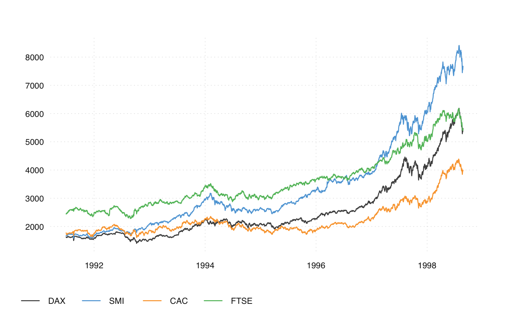
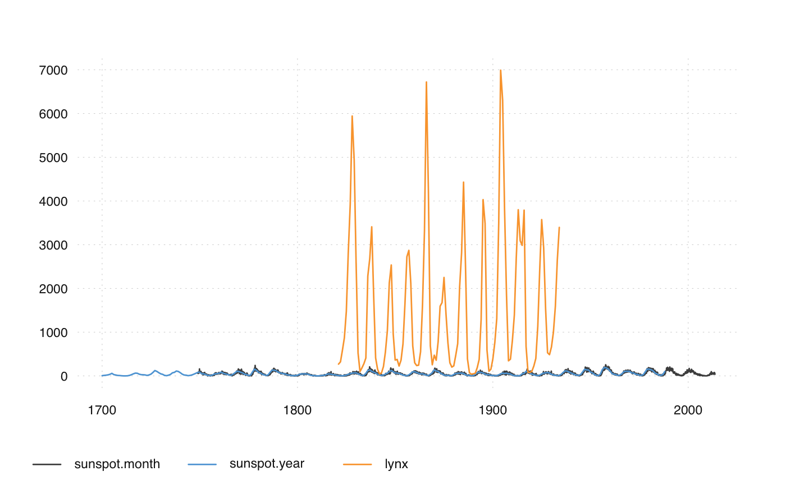
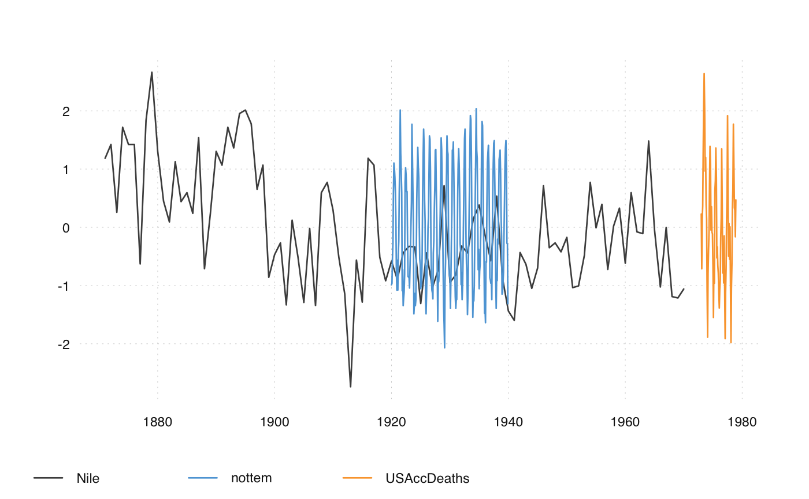

Plot Time Series
ts_plot is a simple and fast plotting function for ts-boxable time series.
It is meant to be used interactively, with limited customizability.
ts_ggplot prduces a similar plot, but uses the
ggplot2 graphic system, and can be customized. With
theme_tsbox() and scale_color_tsbox(), the output of ts_ggplot is very
similar to ts_plot.
ts_ggplot(...) ts_plot(..., title, subtitle, ylab = "", family = getOption("ts_font", "sans"))
Arguments
| ... | ts-boxable time series, objects of class |
|---|---|
| title | title (optional) |
| subtitle | subtitle (optional) |
| ylab | ylab (optional) |
| family | font family (optional, can also be set via |
Details
Both ts_plot and ts_ggplot combine multiple ID dimensions into a single
dimension. To plot mulitple dimensions in different shapes, facets, etc., use
standard ggplot.
Examples
ts_plot(AirPassengers, title = "Airline passengers", subtitle = "The classic Box & Jenkins airline data")ts_plot(total = ldeaths, female = fdeaths, male = mdeaths)ts_plot(EuStockMarkets)ts_plot(sunspot.month, sunspot.year, lynx)# NOT RUN { ts_ggplot(AirPassengers, title = "Airline passengers", subtitle = "The classic Box & Jenkins airline data") ts_ggplot(total = ldeaths, female = fdeaths, male = mdeaths) ts_ggplot(ts_c(sunspot.month, sunspot.year, lynx)) ts_ggplot(ts_scale(ts_c(airmiles, co2, JohnsonJohnson, discoveries))) ts_ggplot(EuStockMarkets) ts_ggplot(sunspot.month, sunspot.year, lynx) ts_ggplot(ts_scale(ts_c(Nile, nottem, USAccDeaths))) library(Quandl) ts_ggplot(Quandl("FRED/GDPMC1", "xts"), title = "US GDP") library(dataseries) dta <- ds(c("GDP.PBRTT.A.R", "CCI.CCIIR"), "xts") ts_ggplot(ts_scale(ts_window( ts_c( `GDP Growth` = ts_pc(dta[, 'GDP.PBRTT.A.R']), `Consumer Sentiment Index` = dta[, 'CCI.CCIIR'] ), start = "1995-01-01"))) + ggplot2::ggtitle("GDP and Consumer Sentiment", subtitle = "normalized values") + theme_tsbox() + scale_color_tsbox() # }